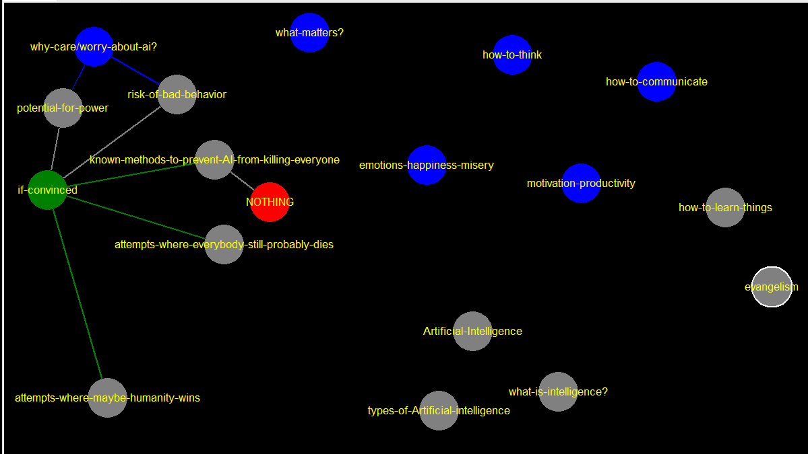

evangelism
Artificial-Intelligence
[[Basic-Alignment-Theory-->Basic-Alignment-Theory]] [[Engineering-Alignment-->Engineering-Alignment]] [[Strategy-->Strategy]] [[Organizations-->Organizations]] [[Other-->Other]]
what-is-intelligence?
if-convinced
[[known-solutions-to-AI-killing-everybody-->known-methods-to-prevent-AI-from-killing-everyone]] [[attempted-solutions-where-everybody-still-dies-->attempts-where-everybody-still-probably-dies]] [[how-to-maybe-not-die-->attempts-where-maybe-humanity-wins]]
how-to-learn-things
attempts-where-maybe-humanity-wins
attempts-where-everybody-still-probably-dies
NOTHING
known-methods-to-prevent-AI-from-killing-everyone
[[nothing-zip-nada-->NOTHING]]
types-of-Artificial-intelligence
risk-of-bad-behavior
[[if-convinced-->if-convinced]]
potential-for-power
[[if-convinced-->if-convinced]]
emotions-happiness-misery
what-matters?
why-care/worry-about-ai?
it might be extremely powerful it might misuse its power (good chance that both things are true) [[potential-power-->potential-for-power]] [[potential-bad-behavior-->risk-of-bad-behavior]] [[pain-and-death-are-bad-->pain-and-death-are-bad]]
motivation-productivity
how-to-communicate
how-to-think
cognitive biases, logical fallacies, useful frameworks